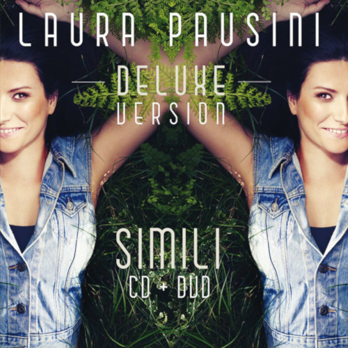
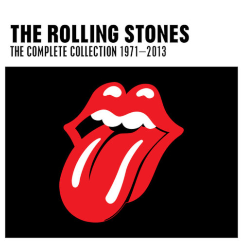

Eric Clapton was 'unplugged' in more
ways than one at that performance.
There, in front of a large studio
audience - and later an enormous
Leer más...
MTV and record-buying audience - an
artist who is know to be very shy dealt
with the most painful experience
anyone could ever imagine - the tragic
loss of his son, Conor.
Leer menos...

La copertina dell'album ritrae Laura
Pausini distesa in un prato; nel
retrocopertina quattro ragazzi distesi
anch'essi nell'erba ognuno con delle
Leer más...
caratteristiche diverse: chi ha dei
tatuaggi, chi ha gli occhi a mandorla,
chi è scuro di pelle; il messaggio vuole
indicare che in fondo siamo tutti simili.br
Leer menos...

The Complete Collection
The Rolling Stones
The three-disc box set Singles
Collection: The London Years contains
every single the Rolling Stones
released during the '60s, including
Leer más...
both the A- and B-sides. It is the first
Stones compilation that tries to be
comprehensive and logical -- for all
their attributes, the two Hot Rocks sets
and the two Big Hits collections didn't
present the singles in chronological
order.
Leer menos...